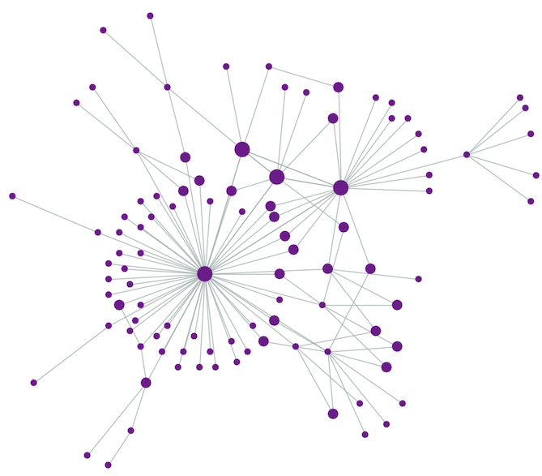

Welcome to the Evolution of Networks Lab
The Evolution of Networks Lab belongs to the Institute for Evolutionary Biology (IBE). Dr. Sergi Valverde, a CSIC scientist, leads the group with a focus on discovering universal evolutionary principles in both natural and artificial networks. Our lab specializes in complex systems, complex networks, ecology, and cultural evolution.
We investigate how innovations emerge and evolve, applying a complex network perspective to understand the evolution of culture and technology. Our work involves empirical studies and computational models, including analyzing millions of patents to study technological evolution. We aim to extend evolutionary theory beyond biology into technology and culture.
Lab Members
Sergi Valverde (Principal Investigator)
Dr. Sergi Valverde is a complex systems scientist at IBE, exploring the origins of innovations in technology and nature. With a background in computer science and physics, Dr. Valverde applies evolutionary theory to non-biological domains, including social evolution.

Salva Duran-Nebreda (Postdoctoral Researcher)
Dr. Salva Duran-Nebreda, a biotechnologist and complex systems researcher, studies major transitions in evolution, with a particular interest in emergent properties in ecosystems and societies. His research spans synthetic biology, EvoDevo, and ecology, focusing on the shifting nature of individuality in evolutionary systems.
Pere Renom (Postdoctoral Researcher)
Dr. Pere Renom is a postdoctoral researcher with a focus on macroevolution and science communication. He holds a PhD in Biomedicine and has published widely in both academic and public domains. Renom combines his experience in biology, philosophy, and paleogenomics with a career in science reporting. "Is the tape of life replayable or not?" That is the question he would like to solve.
External Members

Blai Vidiella (Postdoctoral Researcher)
Dr. Blai Vidiella works on the MPA4sustainability Biodiversa project, focusing on preventing ecological collapse by designing and simulating engineered systems. His work combines ecology, synthetic biology, and mathematical modeling.